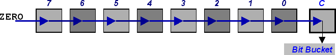
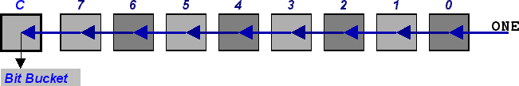
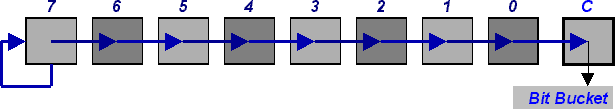
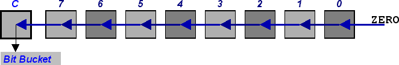
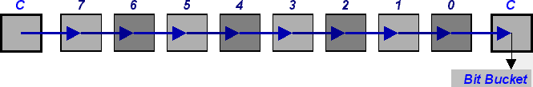
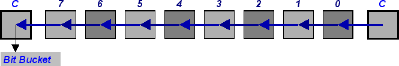
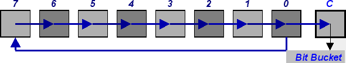
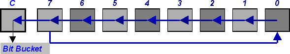

DAY 9. Bit Shifting
Bit shifting is taking all the bits in a number and sliding them to the left or right. You know how when you multiply or divide a number by 10 all the digits shift over? It's exactly the same thing with bit shifting, except that it's multiplying/dividing by 2. In fact, you can do a shift for any base by multiplying or dividing by the radix.
There are fourteen shifting instructions, which sounds like a lot, but the variety comes mainly from what direction to shift. Even better, two of them are almost useless to us, and a third is barely available.
Logical Shifts
A logical shift will grab each bit in a register and shift them. No fuss, no muss.
|
SRL { reg8 | (HL) } |
Logical right shift. All bits move one place right. 0 to b7, b0 to carry. |
| S |
affected |
| Z |
affected |
| P/V |
detects parity |
| C |
affected |
|

|
SLL { reg8 | (HL) } |
Logical left shift. All bits move one place left. 1 to b0, b7 to carry. |
| S |
affected |
| Z |
affected |
| P/V |
detects parity |
| C
| affected |
|

SLL is an undocumented instruction, meaning the mnemonic isn't defined in the TASM80.TAB file. Fortunately, it's rarely used: the only place I've ever
seen it is in the ZTetris source code. If you really want to use it, you can add
these directives near the top of your program.
.addinstr SLL (HL) CB36 2 NOP 1
.addinstr SLL (IX*) DDCB 4 ZIX 1 3600
.addinstr SLL (IY*) FDCB 4 ZIX 1 3600
.addinstr SLL A CB37 2 NOP 1
.addinstr SLL B CB30 2 NOP 1
.addinstr SLL C CB31 2 NOP 1
.addinstr SLL D CB32 2 NOP 1
.addinstr SLL E CB33 2 NOP 1
.addinstr SLL H CB34 2 NOP 1
.addinstr SLL L CB35 2 NOP 1
An SLL is like multiplying by 2 and adding 1. An SRL is like dividing by 2 and giving the remainder the finger (two-finger salute, to you Aussies, Limeys, et al.). If you want to do a left shift that is an exact multiplication, you can use the arithmetic left shift.
Arithmetic Shifts
Arithmetic shifts are designed so that the sign (bit 7) of a number isn't changed. They perform signed multiplication and divison by 2.
|
SRA { reg8 | (HL) } |
Right arithmetic shift — All bits shifted one place to the right. b0
sent to carry, b7 is restored. |
| S |
affected |
| Z |
affected |
| P/V |
detects parity |
| C |
affected |
|

|
SLA { reg8 | (HL) } |
Left arithmetic shift. b7 to carry, 0 to b7. |
| S |
affected |
| Z |
affected |
| P/V |
detects parity |
| C |
affected |
|

Note that there's no need to ignore bit 7 in a left shift. Only numbers less than -64 (%11000000) will have bit 7 cleared, and since -65 times 2 is outside signed 8-bit range, it doesn't matter.
Rotations
Rotations are designed to keep all the bits in a register intact, just move them around.
|
RR { reg8 | (HL) } |
Rotate right. Old carry to b7. b0 to carry. |
| S |
affected |
| Z |
affected |
| P/V
| detects parity |
| C |
affected |
|

|
RL { reg8 | (HL) } |
Rotate left. Old carry to b0. b7 to carry. |
| S |
affected |
| Z |
affected |
| P/V |
detects parity |
| C |
affected |
|

|
RRC { reg8 | (HL) } |
Rotate right with carry. b0 to b7 and carry. |
| S |
affected |
| Z |
affected |
| P/V |
detects parity |
| C |
affected |
|

|
RLC { reg8 | (HL) } |
Rotate left with carry. b7 to b0 and carry. |
| S |
affected |
| Z |
affected |
| P/V |
detects parity |
| C |
affected |
|

These four instructions have optimized versions with the accumulator — RRA RLA RRCA RLCA. They have the exact same function as RR A etc., but are quicker, smaller, and only affect the carry flag.
16-Bit Shifts?
All of the shift instructions work only on one-byte values. However, ADD
HL, HL is basically SLA HL. Furthermore, by using shifts and rotates:
; SRL DE ; SLA LB, whatever that means
SRL D SLA B
RR E RL L
What Was the Point of All This!?
Shifting is like, the most potent tool you have to manipulate data, man. It's a good way to multiply or divide by 2... but that alone is a gross underuse of their power. One nice little trick is that, since an outgoing bit is always sent to the carry, you can use a loop to check which bits in a register are set and reset (Bonus hint: use rotates to preserve the value being tested).
You can also use them to pack (compress) data. Let's take a classic example: the date. Now, disregarding useless info like time and day of the week, a date has three parts. This would normally take 3 bytes, n'est-ce pas? However, take a look at the minimum bits necessary for each field, or rather, their sum. You'll find this is only 16 bits. That's one byte saved! Not much to get excited about, but imagine how much wasted space your
computer would have if it didn't compress file info.
| Element |
Range of Values |
Minimum Bits required |
| Month |
0 to 11 (January to December) |
4 (24 = 16) |
| Day |
0 to 30 (zero indexed for convenience) |
5 (25 = 32) |
| Year |
0 to 127 (as an offset from 1900) |
7 (27 = 128) |
To compress from three bytes to two.
LD A, (temp_year) ; Temporary uncompressed year
LD B, 7
PackYear:
RLA ; Put bit 0 into carry
RR H ; Transfer to H
DJNZ PackYear
; HL = %yyyyyyy? ????????
LD A, (temp_day) ; Temporary uncompressed day
LD B, 5
PackDay:
RLA
RR H ; Transfer to H
RR L ; Catch runoff
DJNZ PackDay
; HL = %dddddyyy yyyy????
LD A, (temp_month) ; Temporary uncompressed month
LD B, 4
PackMonth:
RLA
RR H
RR L
DJNZ PackMonth
; HL = %mmmmdddd dyyyyyyy
LD (packed_date), HL
I think you'll agree that this isn't quite what you want in a time-critical section of
your code (and the decompression code isn't any prettier), but that's just the price you
pay.
There are two other instructions you might find useful for packing: RRD and
RLD. Since they are for BCD, I won't cover them, but you can see their effect
in the Z80 Instruction Set if you're curious.